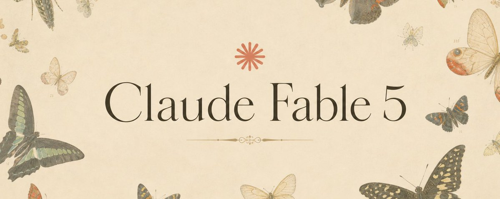

Anthropic が新モデル「Claude Fable 5」と「Claude Mythos 5」を発表した。中身は同じ最上位の頭脳で、違うのは安全装置だけ。長く複雑なタスクほど力の差が開く一方、危ない質問は 1 つ下のモデルにそっと肩代わりさせる仕組みが付いている。
TL;DR
Fable 5 と Mythos 5 — 同じ頭脳、違う安全装置
名前は 2 つでも、土台のモデルは 1 つ。分けているのは安全装置の有無だけ。
今回出たのは 2 つのモデルだ。まず「Claude Fable 5」。これは Anthropic が一般公開向けに、安全装置を付けて出した最上位モデルだ。だれでも今日から使える。
もう一方の「Claude Mythos 5」は、Fable 5 とまったく同じ中身でありながら、一部の安全装置を外した限定版だ。配るのは cyber defender (= サイバー攻撃から守る側の専門家) や重要インフラの提供者など、信頼できる相手に絞られる。
2 つはどちらも「Mythos 級」と呼ばれる能力ティアに属する。これは従来の Opus クラスより 1 段上に位置づけられた、最上位の頭脳ランクのことだ。名前が分かれているのは安全装置の差だけで、Fable はラテン語の fabula (語られるもの)、Mythos はギリシャ語で神話を指す。
Mythos 5 は世界でもっとも強いサイバーセキュリティ能力を持つとされる。だからこそ、攻める側ではなく「守る側」だけに、しかも米国政府との連携 (Project Glasswing) のもとで配られている。
どれくらい強いのか — ほぼ全テストで首位
Fable 5 はソフトウェアエンジニアリング、知識労働、ビジョン (= 画像を見て理解する力)、科学研究まで、幅広い分野で最高水準を出している。とくに長くて手数の多い仕事ほど、他モデルとの差が大きくなる。
下の表には、なじみのある数字だけを抜き出した。数値はすべて公式発表値で、いちばん上の自律コーディングが体感にいちばん近い。
ソフトウェアエンジニアリング — 数ヶ月を数日に
人手で 2 ヶ月かかる移行を 1 日で。しかも使うトークンは前より少ない。
早期テストで Stripe は「数ヶ月分のエンジニアリングが数日に圧縮された」と報告した。5000 万行の Ruby コードベースで、チームが手作業なら 2 ヶ月超かかる全体移行を、Fable 5 は 1 日でやり切ったという。
速いだけではない。Fable 5 は過去の Claude よりトークン効率が高い。つまり同じ仕事をより少ない消費でこなす。Cognition の「FrontierCode」は、難しいコーディング課題を高品質な本番コードの水準を保ったまま解けるかを測るテストだが、Fable 5 は中程度の労力 (effort) 設定でも他のフロンティアモデルを上回った。
早期に触った開発ツール各社の声 —— Cursor「CursorBench で最先端。これまで手の届かなかった長丁場の問題群を開いた」/ GitHub「複雑で長い coding タスクを、これまでの基準を超える自律性と信頼性でこなした」
メモリ・ビジョン・知識労働 — 長丁場でも迷子にならない
数百万トークンの作業に集中し続け、自分のメモを読み返して仕上げを上げる。画面を見るだけでゲームも攻略する。
知識労働。Fable 5 は複雑な分析タスクに強い。Hebbia のシニア級向け金融ベンチマークで全モデル中の最高点を取り、書類にもとづく推論や、グラフ・表の読み取りで大きく伸びた。取引分析の評価でも、事実確認から根本原因の分析、期待値の計算までほぼ全面でトップ成績だったという。
ビジョン。画像を見て理解する力でも新たな最高水準だ。細かい科学グラフから正確な数値を読み取り、スクリーンショットだけから Web アプリのソースコードを作り直すような難題までこなす。さらに足場 (= 補助の道具立て) が少なくて済む。従来の Claude は補助ツール付きでも『Pokémon FireRed』の攻略に苦労したが、Fable 5 は画面の生映像だけを頼りにクリアした。
メモリと長文脈。数百万トークンにわたる長時間タスクでも焦点がぶれず、自分で書いたメモを使って出力を磨く。デッキ構築ゲーム『Slay the Spire』では、ファイルに残す永続メモリを与えると成績の伸びが Opus 4.8 の 3 倍になり、最終局面に到達する頻度も 3 倍に増えた。
自分で動いて作った実例も公開された。物理法則から惑星の軌道を導いて日食を予測する太陽系シミュレーション、工場建設ゲーム『Factorio』の自律プレイ、ブラウザ上の 3D CAD エディタ (しかもエディタ自体を Fable 5 が制作)、クラシック EDM のビートに同期した流体シミュレーション (音楽も Fable 5 がコードで生成) など。
生命科学 — Mythos 5 が創薬を約 10 倍速める
タンパク質設計を専門家の約 10 倍に加速。分子生物学では、初めて「使える新仮説」を安定して出す Claude になった。
創薬の設計。Mythos 5 を使い、社内のタンパク質設計の専門家は工程の一部を約 10 倍に速めた。人の手助けなしで結合部位を選び、設計ツールを選んで動かし、失敗から立て直すという、ふだん科学者がやる一連の作業をモデルだけでこなした。研究で扱った 14 のタンパク質標的のうち 9 つが、創薬候補として有望な結果を出したという。
新しい仮説。Mythos 5 は、新規で説得力のある科学仮説を安定して出せる初の Claude だ。分子生物学の仮説を伏せて比較すると、Anthropic の科学者は Opus 級より Mythos の案を約 80% の割合で好んだ。そのうち大腸菌 (E. coli) のあるタンパク質の新しい仕組みは、同じ問題に独立で取り組んでいた別の研究で裏付けられた
ゲノミクスの新研究。Mythos 5 は 1 週間以上、ほぼ自走で新しいゲノミクス研究を進めた。138 種の動物にまたがる数百万細胞のデータを組み立て、遠い種どうしでも同じ役割を担う細胞を見分ける機械学習モデルを自分で設計・訓練した。人間の指示は大枠だけ。その自作モデルは、学術誌 Science に載った最近のモデルを上回った。しかもサイズは 100 分の 1 だった。
なぜ安全装置が要るのか — 危ない質問は肩代わり
能力が高いほど悪用の威力も上がる。だから Anthropic は「拒否」ではなく「1 つ下のモデルへの肩代わり」を選んだ。
Mythos 級の能力は、安全装置がなければサイバーや生物の分野で深刻な被害に使われかねない。悪用者が他では得られない知識や助言を手にしてしまう「底上げ (uplift)」が起きるからだ。やっかいなのは、研究者には有益な質問が、悪意ある相手の手に渡ると危険になる「二面性 (dual-use)」を多くの高度利用が抱えている点だ。
そこで Fable 5 には新しい classifier (= 危険な要求かどうかを見分ける、別建ての AI) が付いた。サイバーセキュリティ、生物・化学、蒸留 (distillation = 他社が能力を盗み取る行為) に関わる要求を検知すると、Fable ではなく Claude Opus 4.8 が自動で回答する。切り替わるときは利用者に必ず知らされる。
これは「拒否」とは違う。Opus 4.8 もそれ自体が高性能なモデルなので、にべもなく断られるより、ずっと良い体験になる。初期データでは Fable のセッションの 95% 超で肩代わりが一度も起きず、その場合の性能は Mythos 5 と実質同じだという。
安全装置はわざと厳しめに振ってある。安全を優先した結果、害のない質問まで止めてしまうこともある。発動するのは平均 5% 未満のセッションで、Anthropic は launch 後に誤検知 (false positive) を減らしていくとしている。
見張る 3 領域と、データの扱い
classifier が見張るのはサイバー・生物化学・蒸留の 3 つ。あわせてデータ保持のルールも変わった。
① サイバーセキュリティ。Mythos 級はソフトウェアの脆弱性を見つけて突く能力に長け、攻撃を安く簡単にしてしまう。偵察から横展開まで多工程の「agentic hacking (= AI が自分で攻撃の各段階を進める)」もこなす。そこで classifier は脆弱性の悪用と攻撃的サイバー全般を広く覆い、Fable がこれらの課題で前進できないようにした。
この安全装置は jailbreak (= 安全装置を外そうとする攻撃) への耐性も検証ずみだ。社内テストに加え、外部の bug bounty を 1000 時間以上回しても汎用 jailbreak は 1 つも見つからなかった (英 UK AISI が短い初期検証で一歩近づいた例はある)。ある外部パートナーの評価では、Fable 5 は試したどのモデルより堅く、攻撃計画・exploit 開発・防御回避に関する有害な単発要求への応答はゼロだった。
② 生物・化学。従来は兵器に直結するごく狭い質問だけ止めていたが、それでは足りないと判断した。例えば遺伝子治療の運び屋ウイルス AAV (= adeno-associated virus) の設計で重要な一歩を、Mythos 級は専用 AI を超える精度で推論だけからこなした (前章の capsid 予測がこれだ)。有益さと危険さが背中合わせのため、当面は生物・化学のほとんどの要求を Opus 4.8 に肩代わりさせる。
③ 蒸留 (distillation)。過去には、Claude の能力を盗み取って競合モデルを訓練する大規模な試みが確認されている。Fable 5 の能力が蒸留されれば、安全装置のない準フロンティア級が出回りかねない。classifier が蒸留の試みと判定した要求も Opus 4.8 に回す。
データ保持も変わった。Mythos 級の全トラフィックは 30 日間保持される (一次・三次いずれの経路も対象)。新しい Claude の訓練には使わない。目的は、複数の要求にまたがる新手の攻撃や jailbreak への防御と、誤検知の削減だ。人によるアクセスはすべて記録され、ほぼすべてのデータが 30 日で削除される。
アラインメント — 意図どおり安全に振る舞うか
だましや悪用への加担といった「ズレた振る舞い」は低水準。Opus 4.8 と同程度だった。
アラインメント (= AI が意図どおり安全に振る舞うか) の自動評価では、Mythos 5 の「ズレた振る舞い」 — だましや、利用者による悪用への加担など — は低く、Opus 4.8 と同程度だった。Fable 5 は同じ土台のモデルなので、アラインメントの水準も同じになる。
評価の全容は、ほかの安全性・能力テストの詳細とあわせて model card (= モデルの詳細な技術文書) に載っている。図のスコアの根拠は system card の 6.2.3.1 節だ。
いつ・いくらで使えるか
今日からどこでも。価格は据え置きより大幅に安い。ただし定額プランでは段階的に開放する。
Claude Fable 5 は今日からどこでも使える。価格は入力 100 万トークンあたり $10、出力 100 万トークンあたり $50。これは Claude Mythos Preview の半額以下だ。開発者は API から claude-fable-5 として呼び出せる。
```model: "claude-fable-5" # 入力 $10 / 出力 $50 (per 1M tokens)```
需要は非常に高く読みにくいと見込まれるため、定額プランでは慎重に段階開放する。手順は次のとおりだ。
API と従量課金の Enterprise プランでは、今日から完全に利用できる。Mythos 5 は当面、Glasswing のパートナー (サイバーの安全装置を解除) と、近く加わる一部の生物研究者 (生物・化学の安全装置を解除) に限られる。生物分野では、創薬や新療法の研究を速めるための trusted access program (= 信頼できる相手への限定開放) も開く予定だ。
結論
（日本語講準備中）